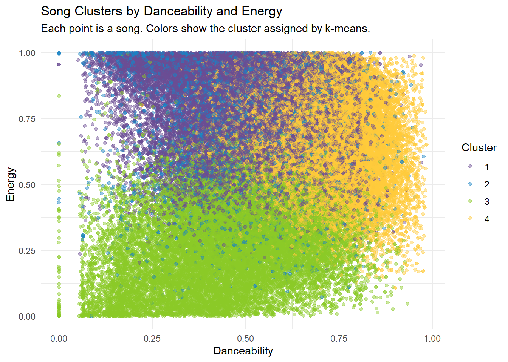
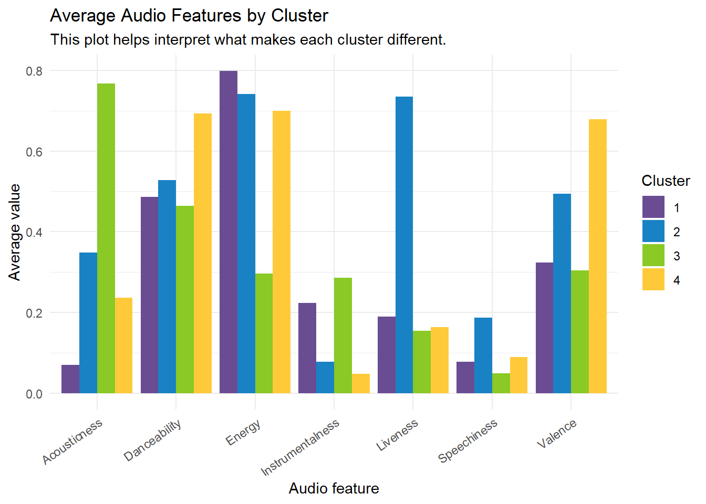
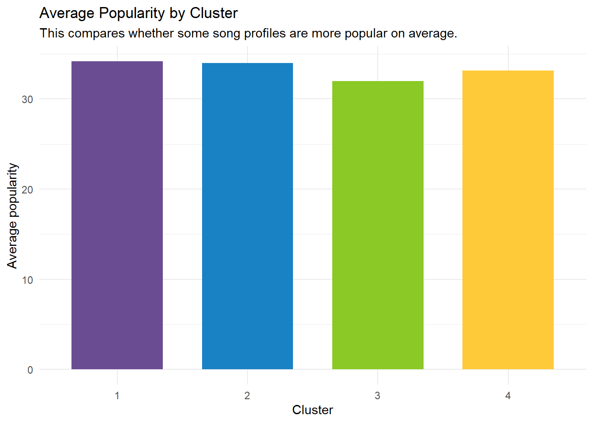

Portfolio 7: Understanding Music Preferences Using Spotify Audio Features 2
Creating Listener Profiles from Spotify Song Clusters
Goal: Moving from my previous piece, I wanted to interpret the clusters from my Spotify k-means analysis and turn them into listener profiles. My goal was to move beyond the technical model output and explain what each cluster might mean in user-centered language.
Load Packages
library(tidyverse)## ── Attaching core tidyverse packages ──────────────────────── tidyverse 2.0.0 ──
## ✔ dplyr 1.2.0 ✔ readr 2.2.0
## ✔ forcats 1.0.1 ✔ stringr 1.6.0
## ✔ ggplot2 4.0.3 ✔ tibble 3.3.1
## ✔ lubridate 1.9.5 ✔ tidyr 1.3.2
## ✔ purrr 1.2.1
## ── Conflicts ────────────────────────────────────────── tidyverse_conflicts() ──
## ✖ dplyr::filter() masks stats::filter()
## ✖ dplyr::lag() masks stats::lag()
## ℹ Use the conflicted package (<http://conflicted.r-lib.org/>) to force all conflicts to become errorslibrary(knitr)Read the Clustered Data
In the previous portfolio piece, I saved a version of the Spotify dataset that included the cluster assignment for each song. I am reading that file here so I can focus on interpreting the clusters instead of rerunning the full k-means process.
spotify_clustered <- read_csv("data/spotify_clustered.csv", show_col_types = FALSE) %>%
mutate(cluster = factor(cluster))
# check the dataset to make sure the cluster column loaded correctly.
glimpse(spotify_clustered)## Rows: 113,999
## Columns: 14
## $ track_name <chr> "Comedy", "Ghost - Acoustic", "To Begin Again", "Can'…
## $ artists <chr> "Gen Hoshino", "Ben Woodward", "Ingrid Michaelson;ZAY…
## $ album_name <chr> "Comedy", "Ghost (Acoustic)", "To Begin Again", "Craz…
## $ track_genre <chr> "acoustic", "acoustic", "acoustic", "acoustic", "acou…
## $ popularity <dbl> 73, 55, 57, 71, 82, 58, 74, 80, 74, 56, 74, 69, 52, 6…
## $ danceability <dbl> 0.676, 0.420, 0.438, 0.266, 0.618, 0.688, 0.407, 0.70…
## $ energy <dbl> 0.4610, 0.1660, 0.3590, 0.0596, 0.4430, 0.4810, 0.147…
## $ valence <dbl> 0.7150, 0.2670, 0.1200, 0.1430, 0.1670, 0.6660, 0.076…
## $ acousticness <dbl> 0.0322, 0.9240, 0.2100, 0.9050, 0.4690, 0.2890, 0.857…
## $ instrumentalness <dbl> 1.01e-06, 5.56e-06, 0.00e+00, 7.07e-05, 0.00e+00, 0.0…
## $ speechiness <dbl> 0.1430, 0.0763, 0.0557, 0.0363, 0.0526, 0.1050, 0.035…
## $ liveness <dbl> 0.3580, 0.1010, 0.1170, 0.1320, 0.0829, 0.1890, 0.091…
## $ tempo <dbl> 87.917, 77.489, 76.332, 181.740, 119.949, 98.017, 141…
## $ cluster <fct> 4, 3, 3, 3, 3, 4, 3, 4, 4, 3, 3, 3, 3, 3, 4, 1, 3, 3,…Summarize each cluster
K-means gives us cluster numbers, but cluster numbers alone are not meaningful.
This summary table helps answer things like, What is Cluster 1 like? What is Cluster 2 like? Which cluster is more danceable?…
Instead of treating the cluster numbers as final answers,we can now look at the average audio features in each group. For example, a cluster with higher danceability and energy may represent upbeat songs, while a cluster with higher acousticness and lower energy may represent calmer songs.
# First summarize each cluster by calculating the average audio features.
#This helps to understand what makes each cluster different.
cluster_summary <- spotify_clustered %>%
group_by(cluster) %>%
summarise(
n_songs = n(),
avg_popularity = mean(popularity, na.rm = TRUE),
avg_danceability = mean(danceability, na.rm = TRUE),
avg_energy = mean(energy, na.rm = TRUE),
avg_valence = mean(valence, na.rm = TRUE),
avg_acousticness = mean(acousticness, na.rm = TRUE),
avg_instrumentalness = mean(instrumentalness, na.rm = TRUE),
avg_speechiness = mean(speechiness, na.rm = TRUE),
avg_liveness = mean(liveness, na.rm = TRUE),
avg_tempo = mean(tempo, na.rm = TRUE),
.groups = "drop"
)
cluster_summary %>%
mutate(across(where(is.numeric), round, 2)) %>%
knitr::kable(
caption = "Average audio features by cluster"
)## Warning: There was 1 warning in `mutate()`.
## ℹ In argument: `across(where(is.numeric), round, 2)`.
## Caused by warning:
## ! The `...` argument of `across()` is deprecated as of dplyr 1.1.0.
## Supply arguments directly to `.fns` through an anonymous function instead.
##
## # Previously
## across(a:b, mean, na.rm = TRUE)
##
## # Now
## across(a:b, \(x) mean(x, na.rm = TRUE))| cluster | n_songs | avg_popularity | avg_danceability | avg_energy | avg_valence | avg_acousticness | avg_instrumentalness | avg_speechiness | avg_liveness | avg_tempo |
|---|---|---|---|---|---|---|---|---|---|---|
| 1 | 34006 | 34.15 | 0.49 | 0.80 | 0.32 | 0.07 | 0.22 | 0.08 | 0.19 | 136.42 |
| 2 | 8868 | 33.97 | 0.53 | 0.74 | 0.49 | 0.35 | 0.08 | 0.19 | 0.73 | 120.77 |
| 3 | 25626 | 31.94 | 0.46 | 0.30 | 0.30 | 0.77 | 0.29 | 0.05 | 0.15 | 109.66 |
| 4 | 45499 | 33.15 | 0.69 | 0.70 | 0.68 | 0.24 | 0.05 | 0.09 | 0.16 | 118.78 |
The cluster summary table gives the good overview of how the four groups differ. Each row represents one cluster, and each column shows the average value of an audio feature within that cluster.
Cluster 1 has the highest average energy and very low acousticness.
- It also has lower valence, meaning these songs are energetic but not necessarily happy or positive-sounding. I interpret this cluster as intense, high-energy music.
Cluster 2 stands out because it has the highest liveness and the highest speechiness.
- This suggests that these songs may feel more performance-based, live, voice-forward, or spoken-word-heavy compared with the other clusters.
Cluster 3 has the highest acousticness and the lowest energy. It also has lower valence.
- This suggests a calmer, softer, or more reflective group of songs.
Cluster 4 has the highest danceability and highest valence, while also having high energy.
- I think this makes it the clearest “feel-good” or upbeat cluster.
Let’s make a cluster scatterplot!
This plot shows the clusters using danceability and energy. Each point is a song, and the color shows which cluster it belongs to.
ggplot(
spotify_clustered,
aes(x = danceability, y = energy, color = cluster)
) +
geom_point(alpha = 0.45, size = 1.5) +
scale_color_manual(
values = c(
"1" = "#6A4C93",
"2" = "#1982C4",
"3" = "#8AC926",
"4" = "#FFCA3A"
)
) +
labs(
title = "Song Clusters by Danceability and Energy",
subtitle = "Each point is a song. Colors show the cluster assigned by k-means.",
x = "Danceability",
y = "Energy",
color = "Cluster"
) +
theme_minimal()
Yikes, looks a lot!
The full dataset has many songs, so plotting every point makes the graph crowded.
How about I use a random sample of songs to make the pattern easier to see?
set.seed(123)
spotify_plot_sample <- spotify_clustered %>%
sample_n(size = min(10000, nrow(spotify_clustered)))
ggplot(
spotify_plot_sample,
aes(x = danceability, y = energy, color = cluster)
) +
geom_point(alpha = 0.35, size = 1.4) +
scale_color_manual(
values = c(
"1" = "#6A4C93",
"2" = "#1982C4",
"3" = "#8AC926",
"4" = "#FFCA3A"
)
) +
labs(
title = "Song Clusters by Danceability and Energy",
subtitle = "This plot uses a sample of songs to reduce overplotting.",
x = "Danceability",
y = "Energy",
color = "Cluster"
) +
theme_minimal()
Looks better, but still a bit messy.
Mood Plot
How about making a mood plot? Let’s see the clusters using valence and energy. I am using the sample here as well. Valence represents how positive or happy a song sounds (so, mooody!).
ggplot(
spotify_plot_sample,
aes(x = valence, y = energy, color = cluster)
) +
geom_point(alpha = 0.35, size = 1.4) +
scale_color_manual(
values = c(
"1" = "#6A4C93",
"2" = "#1982C4",
"3" = "#8AC926",
"4" = "#FFCA3A"
)
) +
labs(
title = "Song Clusters by Mood Features",
subtitle = "This view helps connect clusters to possible moods or listening contexts.",
x = "Valence / Positivity",
y = "Energy",
color = "Cluster"
) +
theme_minimal()
Right about now, I am kind of regretting this direction. Big yikes? The plots are still looking a bit messy, but let’s see.
Better plot for interpreting the clusters
Let’s try another approach. How about making a plot that shows the average feature values for each cluster. I am thinking it might make it easier to compare the “personality” of the clusters.
cluster_summary %>%
select(
cluster,
avg_danceability,
avg_energy,
avg_valence,
avg_acousticness,
avg_instrumentalness,
avg_speechiness,
avg_liveness
) %>%
pivot_longer(
cols = -cluster,
names_to = "feature",
values_to = "average_value"
) %>%
mutate(
feature = str_remove(feature, "avg_"),
feature = str_to_title(feature)
) %>%
ggplot(aes(x = feature, y = average_value, fill = cluster)) +
geom_col(position = "dodge") +
scale_fill_manual(
values = c(
"1" = "#6A4C93",
"2" = "#1982C4",
"3" = "#8AC926",
"4" = "#FFCA3A"
)
) +
labs(
title = "Average Audio Features by Cluster",
subtitle = "This plot helps interpret what makes each cluster different.",
x = "Audio feature",
y = "Average value",
fill = "Cluster"
) +
theme_minimal() +
theme(
axis.text.x = element_text(angle = 35, hjust = 1)
)
Ok, the average audio features plot makes the cluster differences easier to see visually. Instead of looking at individual songs, this plot compares the average feature profile of each cluster.
The biggest differences appear in acousticness, energy, liveness, and valence.
Cluster 3 is much higher in acousticness than the other clusters, which supports the idea that this group represents calmer or more acoustic songs.
Cluster 1 is highest in energy and very low in acousticness, making it feel more intense.
Cluster 2 is clearly highest in liveness and also higher in speechiness, which helps separate it from the other groups.
Cluster 4 is highest in danceability and valence, suggesting upbeat songs that may be easier to dance to or use for mood-boosting listening.
This plot is more helpful than the scatterplots because it summarizes all of the key audio features at once. The scatterplots only show two variables at a time and they ended up messy, while this plot shows the broader profile of each cluster.
Show example songs from each cluster
Since the cluster plots aren’t really telling us much, how about we select popular songs from each cluster? I am thinking this can help us understand what the clusters actually sound like in real life.
example_songs <- spotify_clustered %>%
group_by(cluster) %>%
arrange(desc(popularity)) %>%
slice_head(n = 5) %>%
ungroup() %>%
select(
cluster,
track_name,
artists,
track_genre,
popularity,
danceability,
energy,
valence
)
knitr::kable(
example_songs,
digits = 2,
caption = "Popular example songs from each cluster"
)| cluster | track_name | artists | track_genre | popularity | danceability | energy | valence |
|---|---|---|---|---|---|---|---|
| 1 | Unholy (feat. Kim Petras) | Sam Smith;Kim Petras | dance | 100 | 0.71 | 0.47 | 0.24 |
| 1 | Unholy (feat. Kim Petras) | Sam Smith;Kim Petras | pop | 100 | 0.71 | 0.47 | 0.24 |
| 1 | I’m Good (Blue) | David Guetta;Bebe Rexha | dance | 98 | 0.56 | 0.96 | 0.30 |
| 1 | I’m Good (Blue) | David Guetta;Bebe Rexha | edm | 98 | 0.56 | 0.96 | 0.30 |
| 1 | I’m Good (Blue) | David Guetta;Bebe Rexha | pop | 98 | 0.56 | 0.96 | 0.30 |
| 2 | Ojitos Lindos | Bad Bunny;Bomba Estéreo | latin | 95 | 0.65 | 0.69 | 0.27 |
| 2 | Ojitos Lindos | Bad Bunny;Bomba Estéreo | latino | 95 | 0.65 | 0.69 | 0.27 |
| 2 | Ojitos Lindos | Bad Bunny;Bomba Estéreo | reggae | 94 | 0.65 | 0.69 | 0.27 |
| 2 | Ojitos Lindos | Bad Bunny;Bomba Estéreo | reggaeton | 94 | 0.65 | 0.69 | 0.27 |
| 2 | Tarot | Bad Bunny;Jhayco | latin | 91 | 0.80 | 0.68 | 0.42 |
| 3 | Glimpse of Us | Joji | pop | 94 | 0.44 | 0.32 | 0.27 |
| 3 | Another Love | Tom Odell | chill | 93 | 0.44 | 0.54 | 0.13 |
| 3 | Another Love | Tom Odell | pop | 93 | 0.44 | 0.54 | 0.13 |
| 3 | Running Up That Hill (A Deal With God) | Kate Bush | piano | 90 | 0.63 | 0.55 | 0.20 |
| 3 | Until I Found You | Stephen Sanchez | pop | 90 | 0.54 | 0.51 | 0.23 |
| 4 | Quevedo: Bzrp Music Sessions, Vol. 52 | Bizarrap;Quevedo | hip-hop | 99 | 0.62 | 0.78 | 0.55 |
| 4 | La Bachata | Manuel Turizo | latin | 98 | 0.84 | 0.68 | 0.85 |
| 4 | La Bachata | Manuel Turizo | latino | 98 | 0.84 | 0.68 | 0.85 |
| 4 | La Bachata | Manuel Turizo | reggae | 98 | 0.84 | 0.68 | 0.85 |
| 4 | La Bachata | Manuel Turizo | reggaeton | 98 | 0.84 | 0.68 | 0.85 |
Clean up the example songs table
Some songs appear more than once in the dataset because they are listed under multiple genres. I am removing duplicate track/artist combinations so the example table is easier to read.
example_songs <- spotify_clustered %>%
distinct(track_name, artists, .keep_all = TRUE) %>%
group_by(cluster) %>%
arrange(desc(popularity)) %>%
slice_head(n = 5) %>%
ungroup() %>%
select(
cluster,
track_name,
artists,
track_genre,
popularity,
danceability,
energy,
valence
)
knitr::kable(
example_songs,
digits = 2,
caption = "Popular example songs from each cluster"
)| cluster | track_name | artists | track_genre | popularity | danceability | energy | valence |
|---|---|---|---|---|---|---|---|
| 1 | Unholy (feat. Kim Petras) | Sam Smith;Kim Petras | dance | 100 | 0.71 | 0.47 | 0.24 |
| 1 | I’m Good (Blue) | David Guetta;Bebe Rexha | dance | 98 | 0.56 | 0.96 | 0.30 |
| 1 | Tití Me Preguntó | Bad Bunny | latin | 97 | 0.65 | 0.72 | 0.19 |
| 1 | As It Was | Harry Styles | pop | 95 | 0.52 | 0.73 | 0.66 |
| 1 | Sweater Weather | The Neighbourhood | alt-rock | 93 | 0.61 | 0.81 | 0.40 |
| 2 | Ojitos Lindos | Bad Bunny;Bomba Estéreo | latin | 95 | 0.65 | 0.69 | 0.27 |
| 2 | Tarot | Bad Bunny;Jhayco | latin | 91 | 0.80 | 0.68 | 0.42 |
| 2 | You Proof | Morgan Wallen | country | 86 | 0.73 | 0.85 | 0.64 |
| 2 | Enemy (with JID) - from the series Arcane League of Legends | Imagine Dragons;JID;Arcane;League of Legends | rock | 86 | 0.73 | 0.78 | 0.56 |
| 2 | Stan | Eminem;Dido | hip-hop | 85 | 0.78 | 0.77 | 0.51 |
| 3 | Glimpse of Us | Joji | pop | 94 | 0.44 | 0.32 | 0.27 |
| 3 | Another Love | Tom Odell | chill | 93 | 0.44 | 0.54 | 0.13 |
| 3 | Running Up That Hill (A Deal With God) | Kate Bush | piano | 90 | 0.63 | 0.55 | 0.20 |
| 3 | Until I Found You | Stephen Sanchez | pop | 90 | 0.54 | 0.51 | 0.23 |
| 3 | lovely (with Khalid) | Billie Eilish;Khalid | pop | 89 | 0.35 | 0.30 | 0.12 |
| 4 | Quevedo: Bzrp Music Sessions, Vol. 52 | Bizarrap;Quevedo | hip-hop | 99 | 0.62 | 0.78 | 0.55 |
| 4 | La Bachata | Manuel Turizo | latin | 98 | 0.84 | 0.68 | 0.85 |
| 4 | Me Porto Bonito | Bad Bunny;Chencho Corleone | latin | 97 | 0.91 | 0.71 | 0.42 |
| 4 | Under The Influence | Chris Brown | dance | 96 | 0.73 | 0.69 | 0.31 |
| 4 | Efecto | Bad Bunny | latin | 96 | 0.80 | 0.48 | 0.23 |
Compare popularity by cluster
Now, let’s compare average popularity across clusters. We can see whether some song profiles are more popular on average.
ggplot(cluster_summary, aes(x = cluster, y = avg_popularity, fill = cluster)) +
geom_col(width = 0.7) +
scale_fill_manual(
values = c(
"1" = "#6A4C93",
"2" = "#1982C4",
"3" = "#8AC926",
"4" = "#FFCA3A"
)
) +
labs(
title = "Average Popularity by Cluster",
subtitle = "This compares whether some song profiles are more popular on average.",
x = "Cluster",
y = "Average popularity"
) +
theme_minimal() +
theme(legend.position = "none")
Average popularity was fairly similar across the four clusters. Cluster 3 had the lowest average popularity, while Clusters 1 and 2 were slightly higher. However, the differences are not large, so I would interpret this cautiously. This suggests that the clusters are more useful for understanding different song profiles than for explaining popularity.
Create listener profiles
As a final attempt to make this piece have a more meaningful direction and the custers easier to understand, I am going to try to translate the four clusters into listener profiles.
These profiles are not real users from survey data. Instead, they are interpretations based on the audio patterns in each cluster. Instead of leaving the groups as Cluster 1, Cluster 2, Cluster 3, and Cluster 4, I gave each group a name based on its audio pattern. This step helped me connect the technical model output to user-centered language.
listener_profiles <- tibble(
Cluster = c("1", "2", "3", "4"),
Listener_Profile = c(
"The Intense Listener",
"The Live/Voice Listener",
"The Calm Acoustic Listener",
"The Feel-Good Listener"
),
Audio_Pattern = c(
"High energy, low acousticness, lower valence",
"High liveness, higher speechiness, high energy",
"High acousticness, low energy, lower valence",
"High danceability, high energy, high valence"
),
Possible_Use_Case = c(
"Workouts, intense focus, dramatic or high-energy listening",
"Live performances, voice-forward music, rap or spoken-word-heavy listening",
"Studying, relaxing, reflective listening, background music",
"Dancing, commuting, social settings, mood boosting"
)
)
knitr::kable(
listener_profiles,
caption = "Listener profiles based on the four Spotify song clusters"
)| Cluster | Listener_Profile | Audio_Pattern | Possible_Use_Case |
|---|---|---|---|
| 1 | The Intense Listener | High energy, low acousticness, lower valence | Workouts, intense focus, dramatic or high-energy listening |
| 2 | The Live/Voice Listener | High liveness, higher speechiness, high energy | Live performances, voice-forward music, rap or spoken-word-heavy listening |
| 3 | The Calm Acoustic Listener | High acousticness, low energy, lower valence | Studying, relaxing, reflective listening, background music |
| 4 | The Feel-Good Listener | High danceability, high energy, high valence | Dancing, commuting, social settings, mood boosting |
Conclusion
For this portfolio piece, I used Spotify audio features to explore whether songs could be grouped into meaningful listening profiles.
The scatterplots were useful as a first look, but they were not enough to fully interpret the clusters. Even after using a sample of songs, the points still overlapped because the dataset contains many tracks and the clustering model used several features at once. This helped me understand that a two-dimensional plot can sometimes hide the full structure of a clustering model. The cluster summary table and average feature plot were more useful because they showed the average profile of each group across multiple audio features.
This project helped me practice moving from data cleaning, to modeling, to interpretation. I also learned that the most important part of clustering is not just creating the groups, but explaining what those groups might mean. In the future, I would like to try practiicing in turning this kind of analysis into a recommendation tool, or playlist generator where users explore songs based on different listening profiles.